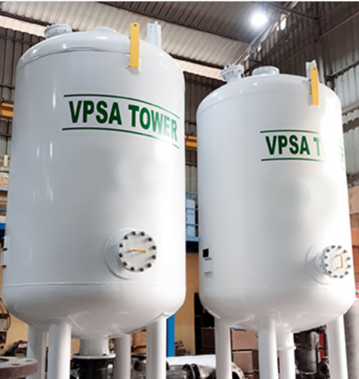

VPSA Oxygen Gas Plant
In VPSA based Oxygen gas plants Regeneration process is dine with vacuum pumps,
which ensures complete regeneration of ZMS. Adsorptive air separation is a cyclic process, in which
adsorbent material is alternately, Fed with pressurised air
to produce the required product and Regenerated by vacuum to remove the waste gases from the adsorbent.
Adsorptive air separation is a cyclic process, in which adsorbent material is alternately.
It consist three stage: -
- Purification
- Absorption
- Desorption

Salient Features
- Many years of experience in plant design and manufacturing guarantee high reliability of all VPSA systems.
- Full Automation All systems are designed for continuous operation and automatic Oxygen demand adjustment.
- Fast Start-up time is only 5 minutes to get desired Oxygen purity. So these units can be switched ON & OFF as per Oxygen demand changes.
- Easy to handle and maintain.
- High Reliability Very reliable for continuous and steady operation with constant Oxygen purity.
- Lower Space Requirement.
- Fully automated controls for unattended operation.
- Expected Molecular sieves life is around 15-years i.e. whole life time of.

Technical Specifications
| Plant | VPSA Oxygen Generator |
| Product Flow (NM3/hr) | 50 to 5000 |
| Product Purity(%O2) | 90-95 |
| Product Pressure – Base Plant (brag) | -0.5 to 0.5 |
| Pressure with O2 Compressor (brag) | 2-150 |
Industrial Application
Oxygen finds broad application in various technological processes and in almost all industry branches are highlighted below:
- Metal gas welding, cutting and brazing :- Oxygen allows generating high-temperature flame in welding torches thus ensuring high quality and speed of work performance.
- Metal industry :- Oxygen is heavily used in the metal industry where it helps to increase burning temperature by the production of ferrous and non-ferrous metals and significantly improve the overall process efficiency.
- Chemical and petrochemical industries :- In the chemical and petrochemical industries, oxygen is widely used for oxidation of raw chemicals for recovery of nitric acid, ethylene oxide, propylene oxide, vinyl chloride and other important chemical compounds.
- Fish farming :-The use of oxygen in the fish farming helps increase the survival and fertility ratios and reduce the incubation period. Along with fish culture, oxygen is applied for shrimps, crabs and mussels rearing.
- Glass industry :- In glass furnaces oxygen is effectively used for burning temperature increase and burning processes improvement.